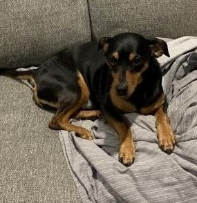
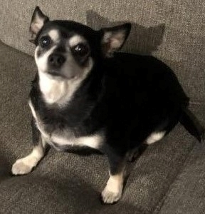
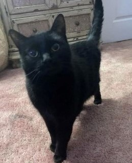
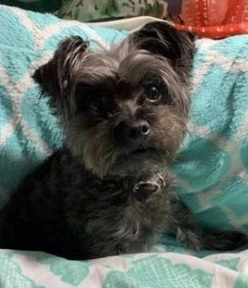

Animals That Need Homes
Iris
She is a great family dog. She would like to be in a home with children. She gets along great with other dogs but dislikes cats.
Milo
Milo is a sweet dog. He should be in a house without children. He adores other dogs and cats.
Hope
Hope is shy dog. She will love you if you give her a chance. She is also a great guard dog.
Maisey
Maisey is a very friendly cat. She enjoys the company of children and other animals. She learns very quickly and wants lots of love.
Adopted Animals
Toby
Toby was a very nervous dog, but he found his forever home that helps him. He can now comfortably sleep anywhere he wants.
Peanut
Peanut is the perfect lap dog for her owners. She is sweet and very good on car rides. She also learned how to dance for her food.
Raquel
Raquel is a loving senior pet that gets along great with the family dogs.
Bo
Bo is a seven year old Yorkipoo. He loves his forever home and enjoys playing with all the kids.
